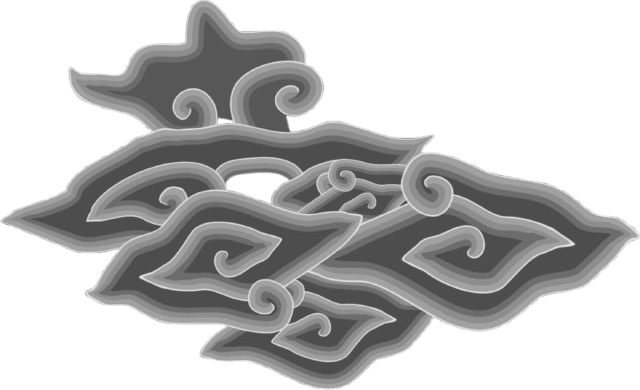
PLAYANG
Yuk kenali budaya Banyumas dengan cara yang seru!
Baca kisah mereka dan temukan nilai-nilai luhur di balik tawa para Punakawan.
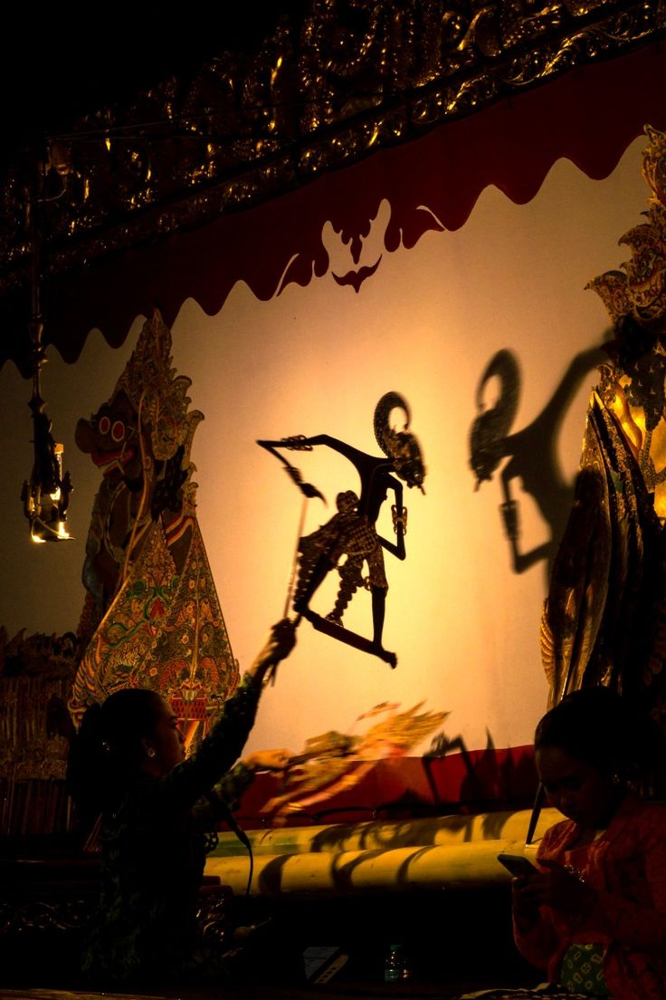
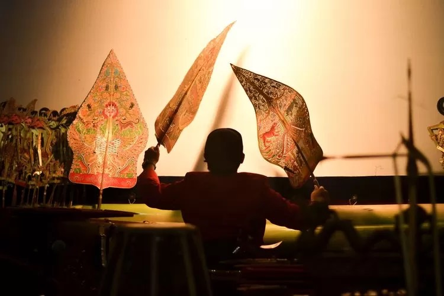
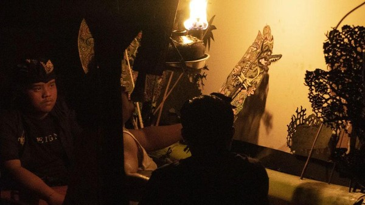
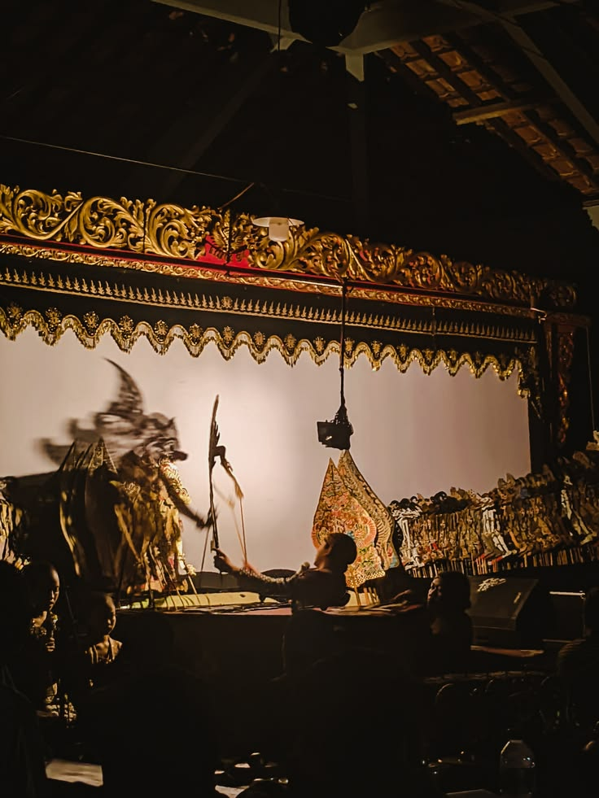
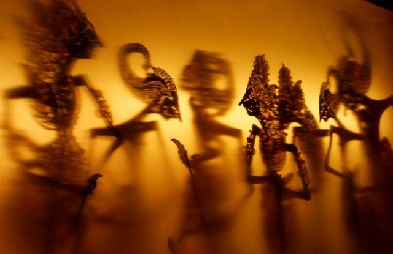
PUNAKAWAN
Dalam dunia wayang, punakawan hadir sebagai sosok jenaka nan bijak yang menuntun para ksatria dengan humor, kejujuran, dan kebijaksanaan rakyat kecil.
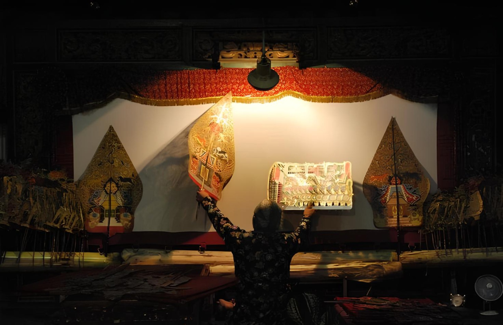
SEMAR
Sang Pengayom Dan Penuntun
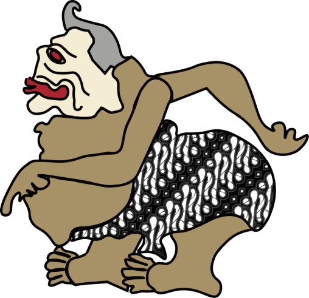
Pilih Karakter Kamu!
Pilih tokoh favoritmu, mainkan dialognya, dan lihat sendiri bagaimana nilai-nilai Punakawan hidup lewat candaan mereka.
SEMAR
Sang Pengayom dan Penuntun
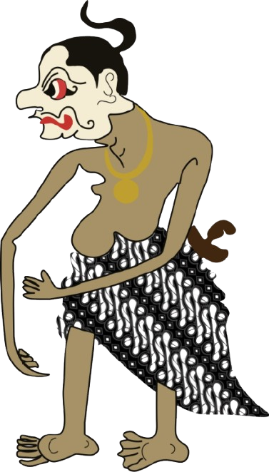
GARENG
Si Penengah yang Rendah Hati
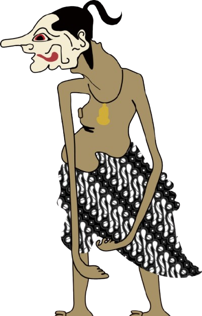
PETRUK
Si Lugas dan Panjang Akal
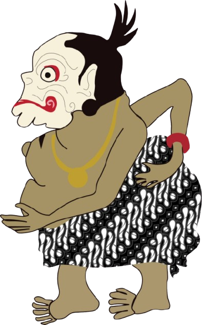
BAWOR
Si Jujur dan Apa Adanya